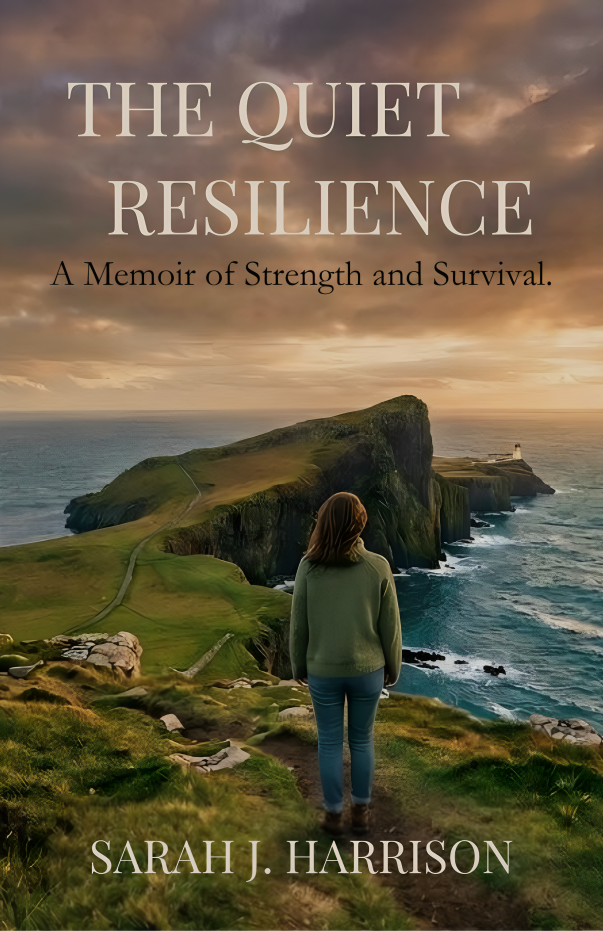
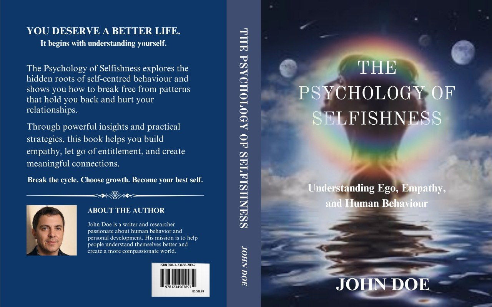

SELECTED WORK
A Collection of Thoughtful Work.
A selection of creative and editorial work created with clarity, purpose, and the reader in mind.

FEATURED PROJECT
The Quiet Resilience
A Memoir of Strength and Survival
A thoughtful book cover concept designed to communicate resilience, reflection, strength, and the emotional journey at the heart of the story.
PROJECT SERVICES
- Visual Concept Development
- Typography & Layout
- Cover Composition
- Publication-Ready Design

BOOK COVER DESIGN
The Quiet Resilience
Full Wraparound Edition — Front, Spine & Back
A complete wraparound cover for the paperback edition, including author bio, editorial praise, and back cover blurb alongside the original front cover artwork.
PROJECT SERVICES
- Full Wraparound Cover Design
- Back Cover Copy Layout
- Author Bio & ISBN Placement

BOOK COVER DESIGN
God Loves You
A Children's Book About God's Never Ending Love
A complete wraparound cover for a children's picture book, designed with warm illustrations and gentle Bible-based messaging to reassure young readers of God's love.
PROJECT SERVICES
- Full Wraparound Cover Design
- Back Cover Copy Layout
- Typography & Illustration Direction

BOOK COVER DESIGN
God Loves You
Front Cover Edition
A standalone front cover concept for the ebook and digital release, featuring the same warm, illustrated style as the paperback edition.
PROJECT SERVICES
- Visual Concept Development
- Typography & Layout
- Cover Composition

BOOK COVER DESIGN
The Psychology of Selfishness
Understanding Ego, Empathy, and Human Behaviour
A full wraparound cover concept for a self-help and psychology title exploring the roots of self-centred behaviour and how to build empathy and meaningful connection.
PROJECT SERVICES
- Visual Concept Development
- Typography & Layout
- Full Wraparound Cover Design
- Author Bio & Back Cover Layout
"The moment in 'The Invisible Man' where Father Brown taps the postman on the shoulder is one of those genuinely satisfying literary payoffs where everything clicks at once. I felt it."
BETA READING
The Innocence of Father Brown
Classic Mystery Short Story Collection
A detailed beta reading report covering all twelve stories in the collection, balancing praise for standout moments with honest notes on repetitive pacing and voice across the book.
PROJECT SERVICES
- Reader Feedback
- Story-by-Story Evaluation
- Pacing & Structure Notes
"Honestly, Mr. Reeder himself carries this book... I found myself smiling every time he said something like 'I have a criminal mind' in that gentle, apologetic way, right before doing something genuinely ruthless."
BETA READING
The Weight of Small Rooms
Classic Mystery Beta Read — Red Aces
A conversational, reader-first beta response highlighting a standout lead character while flagging a subplot that pulled focus from the central mystery.
PROJECT SERVICES
- Reader Feedback
- Character & Voice Notes
- Pacing Evaluation
"What grabbed me most was the opening of Chapter 1... I felt the weight of that sentence... That landed. There's genuine gravity there."
BETA READING
Jesus The Christ
Christian Nonfiction / Theology
Chapter-by-chapter feedback on a theological manuscript, balancing appreciation for strong narrative openings with honest notes on where the prose shifts into a more distancing, lecture- like tone.
PROJECT SERVICES
- Reader Feedback
- Line-Level Observations
- Tone & Voice Consistency Notes
Draft: "She was sad because her mother had died..."
Fixed: "Her mother was gone, and the grief sat in
her chest like something she hadn't unpacked yet."
LINE EDITING
The Weight of Small Rooms
Line Editing Sample — Literary Fiction
A before-and-after line editing sample showing how flat, telling sentences were reworked into vivid, emotionally specific prose — elevating sentence flow, word choice, and rhythm without changing the author's story or voice.
PROJECT SERVICES
- Line Editing
- Sentence-Level Rewrites
- Voice Preservation
"I really felt for Mara from the first chapter... I didn't expect to tear up at a scene about a broken kettle, but here we are."
BETA READING
The Weight of Small Rooms
Beta Reading Sample — Literary Fiction
A warm, reader-voiced beta response capturing emotional highs, pacing dips, and small continuity notes — the kind of feedback that helps an author see their manuscript through a real reader's eyes.
PROJECT SERVICES
- Reader Feedback
- Pacing Notes
- Emotional Impact Assessment
MORE TO COME
More Stories. More Work.
New projects will be added to the collection as more authors bring their stories to The Author's Foundry.
Have a book that deserves thoughtful attention?
LET'S WORK ON YOUR BOOK →